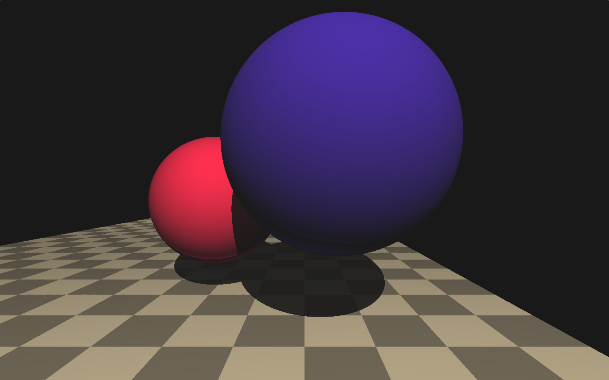
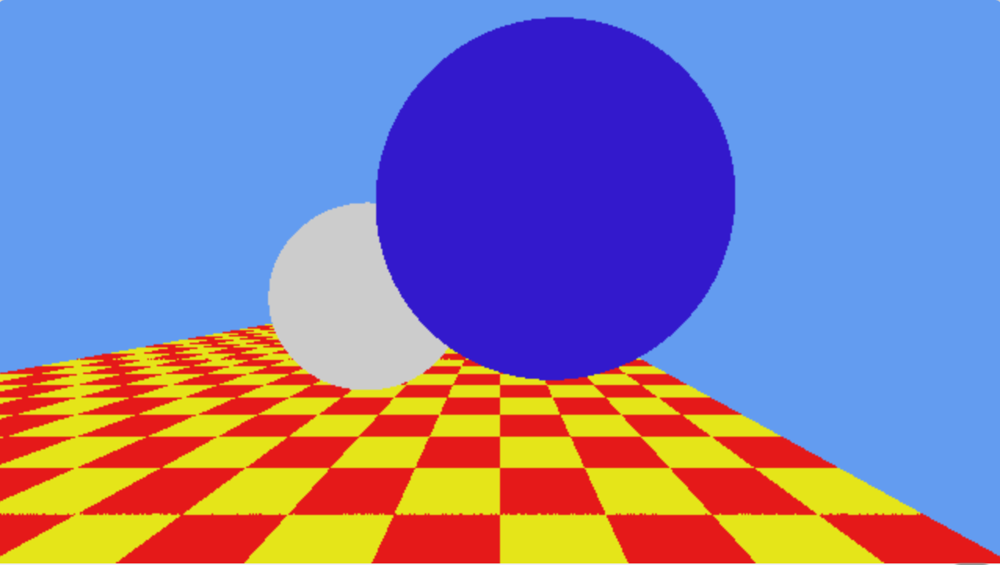
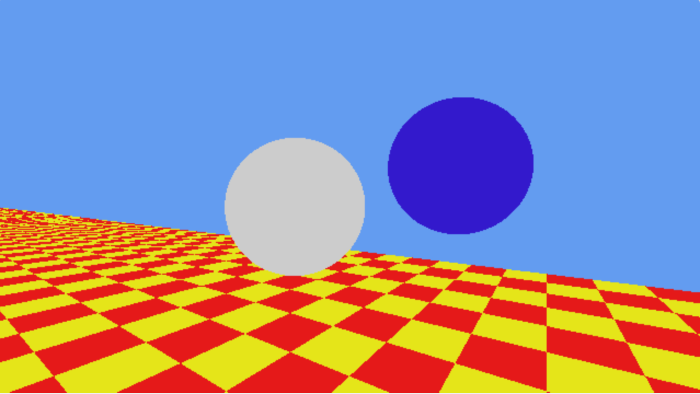
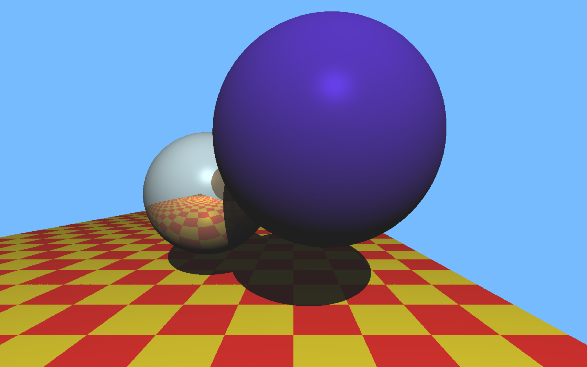
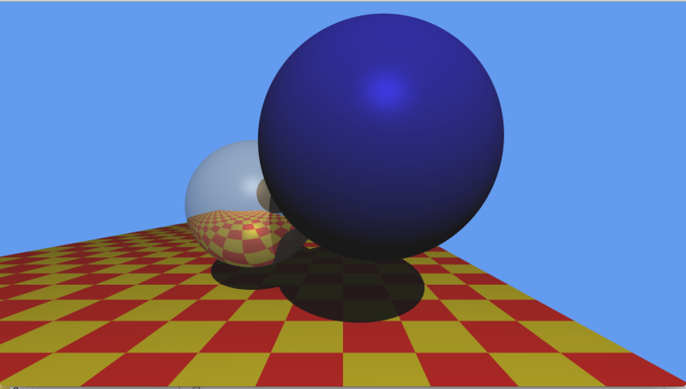
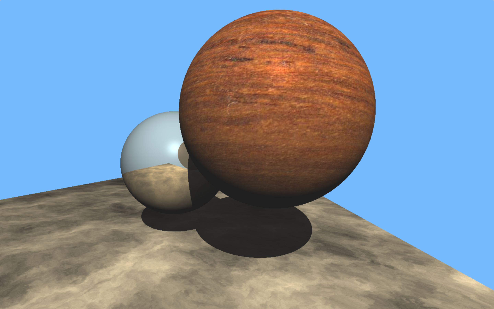
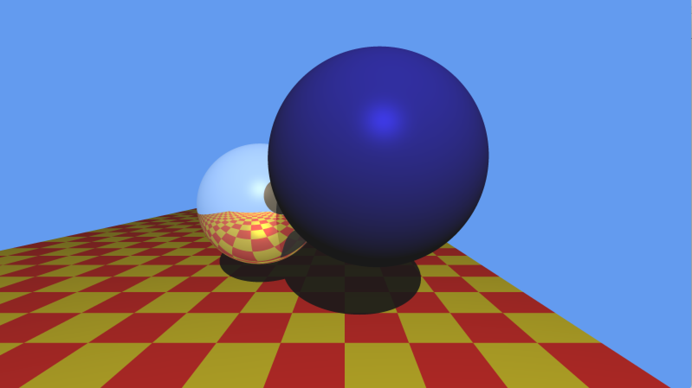

Step One by Eric Knapik
The goal was to set up the scene as depicted in Turner Whitted's paper. sphere reflective size: 0.65 sphere reflective position: Vec3(0.1, 1.0, -1.0) sphere transmissive size: 0.7 sphere transmissive position: Vec3(1.2, 1.4, 0.2) light position: Vec3(1.5, 5.0, 6.0) Light color: R=1.0 G=0.9 B=0.7 scale is 0.0-1.0 camera position: Vec3(1.0, 1.1, 2.0) Focal length: 1.5 camera look at point: Vec3(1.0, 1.1, -1.0) floor position: Vec3(0.0, 0.0, 0.0) floor size: infinate plane limited between -5 and 3 on x axis The live shader code

Step Two
This rendering is done using GLSL as the backend for the ray tracer. The benefit here is that the fragment shader will run per pixel in the given region so all I have to do is write the function to color each pixel accordingly. The live shader code is using shader toy as backend for the fragment shader what it is doing is drawing two triangles over the region you want then run the fragment shader for that defined square. Alternatively if you were to do this not in the fragment shader you can define an array of pixel values then send that over to the gpu to render that as a texture over any defined shape. (rectangles are really good at simulating screens)

Step Two Camera Movement Bonus
The camera has been moved off to the left and slightly forward while looking at the same position. In the live shader code you could edit the camera position to be Vec3(cos(iGlobalTime), 1.1, sin(iGlobalTime)); to see the camera move around a specific point.

Step Three
This step was about properly implementing the phong illumination model within the ray tracer. According to the Pong illumination model the specular and diffuse components of light should summ up to less than 1. This would correspond to 100% light within a scene, however when that was implemented the scene looked much darker than it should. Adjustments were scaled accordingly so that the scene follows the phon illumination but the desired image looks better.

Super Sampling 5
This image was rendered with a super sampling rate of 5 which with uniform super sampling I am casting 25 rays per pixel. My uniform super sampling works on the same principle of down sampling so, if we have a 1000px by 1000px image data file then display that image as if it were 500px by 500px then down sampling would occur and four pixels would then be representing one pixel. For my super sampling I render with N times my width and height then perform down sampling to get the final image, this is were N is the super sampling rate.Step Four Procedural Textures
Well this should have been explained earlier or not in all the previous pictures. The floor texture is proceduraly generated, looking at the x and z coordinate positions it can be treated at UV coordinates. With these coordinates the checkard floor is fairly straight forward with flipping between odd and even rows and columns for the color assignment. The width and height of the rows can be changed to create non-uniform "squares".

Checkpoint 4 Bonus
The floor is a marble style perlin noise procedural texture and the sphere has been textured with a wood texture. The marble texture is achieved by using a noise texture to seed fractal brownian motion and then domain warping the result. Domain warping is using the results of one fractal brownian motion call to move the position for another call. I do this three times and it transforms the summed noise into a marble style texture. The sphere texture mapped with a wooden texture isn't nearly as exciting it's just a 1-1 mapping.
